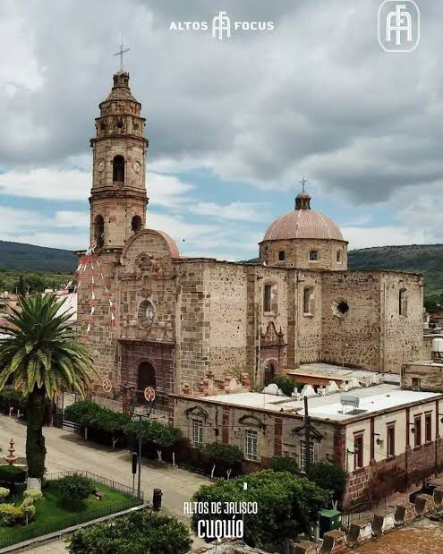

Templo del Sagrado Corazón
El Templo del Sagrado Corazón se construyó a partir del 29 de marzo de 1906 en un terreno donado por Antonia González para servir como lugar de oración para un asilo de párvulos. La construcción se detuvo varias veces debido a problemas de seguridad, pero para 1916 el altar mayor estaba terminado. La madre María Teresa González Estévez convirtió la escuela adjunta en un orfanatorio y fundó la congregación de religiosas Clarisas del Sagrado Corazón de Jesús.

Templo de Las Cruces
El Templo de Las Cruces está situado en una loma con vista panorámica del pueblo. Cada 3 de mayo se celebra la Santa Cruz, donde los fieles acuden con flores, rezos y música. Es un lugar lleno de tradición y paisajes hermosos.
Templo de Teponahuasco
Santuario del Señor de Teponahuasco Ahora nos parecerá extraño ver un cementerio en el atrio de un templo, pero antiguamente esa era la usanza. Este Santuario es de fachada modesta, pero su interior es especialmente hermoso, sobre todo su altar mayor, en donde se encuentra el Señor de Teponahuasco, un Cristo de pasta de caña fervorosamente venerado desde tiempos coloniales. A un costado existe una cooperativa muy interesante, son mujeres alfareras que rescataron este antiguo oficio de su desaparición: podrás conocer el proceso de elaboración, además podrás adquirir estas bellas piezas de barro a muy buenos precios. #Teponahuasco se localiza a 4 kms de #Cuquío, visitar ambos lugares son el complemento perfecto.
Templo de San Felipe Apóstol
Es el templo principal de Cuquío y uno de los más importantes. Aquí se celebran las fiestas patronales del 11 de mayo. Su estructura imponente y su campanario destacan en el centro del pueblo. Es símbolo de identidad para los cuquillenses La Parroquia de San Felipe de Cuquío es la más antigua de la región, su primer libro de registro de bautismos data del año de 1666 y su jurisdicción abarcaba los actuales municipios de Yahualica, Ixtlahuacan del Rio y Cuquío. Su construcción comenzó el año de 1761 en un terreno donado por la familia Gonzalez de Islas y fue terminado hasta el año de 1843. Durante la lucha de independencia este edificio ya estaba en construcción y fue utilizada como fuerte de las tropas realistas que tomaron Cuquío desde 1811 hasta 1814. También fue Cuartel militar durante la lucha cristera y fue escenario de varios enfrentamientos y fusilamientos de Cristeros
